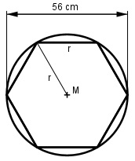

Aufgabe 215 Aus einem runden Stamm mit einem Durchmesser von 56 cm soll ein Sechseck mit geringstmöglichem Verlust geschnitten werden. Wie groß ist der Umfang des Sechsecks?

Der Radius des Baumstamms entspricht dem Umkreisradius und einer Seitenlänge s des Sechsecks. 56 cm s = ------- = 28 cm 2 U = 6 * 28 cm = 168 cm